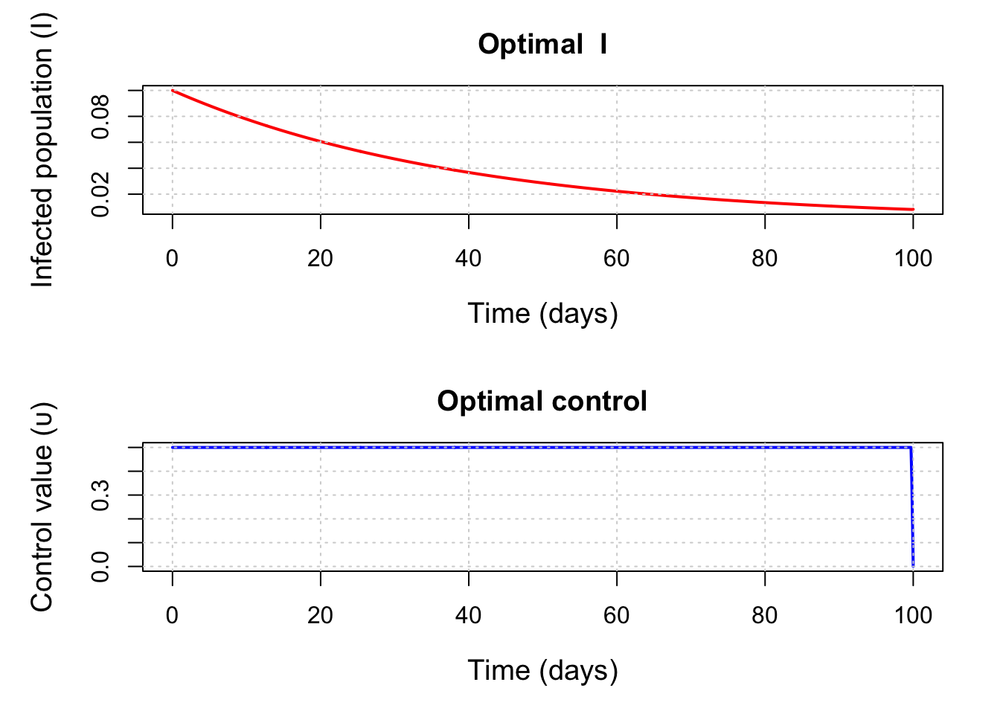

library(ipoptr)
beta <- 0.5
gamma <- 0.25
N <- 0.9
υ_max <- 0.5
A <- 10
B <- 0.01
I0 <- 0.1
t0 <- 0.0
tf <- 100
dt <- 0.1
T <- as.integer(tf / dt) # 1000Exponential infection model with a lockdown control using R + IPOPT
Introduction
This example is based on the exponential infection model that compares indirect and direct optimal control methods. Here we replicate the NLP formulation of the optimal control problem solved using Interior Point Optimisation (IPOPT), but in R instead of Julia.
The model focuses on a single compartment of infected individuals (I). The intervention is modelled as a time-dependent control variable υ(t) that reduces the effective transmission rate by a factor of 1 - υ(t), where υ(t) ∈ [0, 1] represents the intensity of the applied control (e.g., social distancing or lockdown measures).
The model is described by:
\[ \begin{aligned} \dfrac{\mathrm{d}I}{\mathrm{dt}} &= (\beta * (1 - υ(t)) * N - \gamma) * I \end{aligned} \]
Here, β is the transmission rate, γ is the recovery rate, and N is the total population.
In this example, the goal is to minimise both the disease burden and the cost of interventions over time [0, T]. The objective function balances:
A × I(t)- Disease costB × υ(t)²- Intervention cost
\[ \begin{aligned} \min_{υ(t)} \sum_{t=1}^{T+1} \Delta t \cdot \left(A \cdot I_t + B \cdot υ_t^2\right) \end{aligned} \]
Setup
The package ipoptr has not been updated since 2012, so it is no longer found in the CRAN repository. The recommended approach is to build the R interface directly from the official COIN-OR IPOPT source code, which handles modern R versions and systems properly. This method uses the official COIN-OR R interface that comes bundled with IPOPT itself, it creates an ipoptr package that you can load with library(ipoptr).
You can follow these steps below, or for more detailed installation instructions, system-specific requirements, and troubleshooting, refer to the official COIN-OR IPOPT installation guide:
Install IPOPT
On macOS (using Homebrew):
brew install ipoptOn Ubuntu/Debian:
sudo apt-get update
sudo apt-get install coinor-libipopt-devOn Windows:
# Using conda (recommended)
conda install -c conda-forge ipopt
# OR download from official website and install manually
# https://github.com/coin-or/Ipopt/releasesSet up environment variables
On macOS:
export PKG_CONFIG_PATH=/opt/homebrew/lib/pkgconfig:$PKG_CONFIG_PATH
pkg-config --cflags --libs ipopt # should print include/lib flagsOn Ubuntu/Debian:
# Usually not needed as system package manager handles this
# But if needed:
export PKG_CONFIG_PATH=/usr/lib/pkgconfig:$PKG_CONFIG_PATH
pkg-config --cflags --libs ipoptOn Windows:
# If using conda, usually not needed
# If manual installation, set paths to your IPOPT installation
set IPOPT_DIR=C:\path\to\your\ipopt\installationClone and build from COIN-OR source
git clone https://github.com/coin-or/Ipopt.git
Rscript -e 'install.packages("Ipopt/build/contrib/RInterface", repos=NULL, type="source")'Step 4: Set library path and load package
On macOS:
Sys.setenv(DYLD_FALLBACK_LIBRARY_PATH = "/opt/homebrew/lib")
library(ipoptr)On Ubuntu/Debian:
# Usually not needed as system handles library paths
library(ipoptr)On Windows:
# If using conda, usually not needed
# If manual installation, you may need to set PATH
# Sys.setenv(PATH = paste("C:\\path\\to\\your\\ipopt\\bin", Sys.getenv("PATH"), sep=";"))
library(ipoptr)Parameters
R vs JuMP: Variable declaration and indexing
This section shows how R handles variable declaration compared to JuMP’s approach. R’s ecosystem lacks the declarative modelling capabilities of JuMP, requiring a more extensive manual management that complicates the development process.
R : Manual variable layout
In R, we must manually organise all decision variables into a single vector (x), provide indexing functions (idxI and idxU), and handle bounds separately from variable declaration.
# Decision vector x = [ I[1:(T+1)], υ[1:(T+1)] ] (length n = 2*(T+1))
nI <- T + 1L # Infected population at each time
nU <- T + 1L # Control variable at each time
n <- nI + nU # Total number of decision variables
# Functions for indexing variables in the decision vector
idxI <- function(t) t # I_t at position t (1..T+1)
idxU <- function(t) nI + t # υ_t at position nI+t (1..T+1)JuMP : Variable declaration and bounds
@variable(model, 0 <= I[1:(T+1)] <= 1) # State variables with bounds
@variable(model, 0 <= υ[1:(T+1)] <= υ_max) # Control variables with boundsR vs JuMP: Objective function
R Approach
eval_f <- function(x) {
I <- x[1:nI] # Infected population
υ <- x[(nI+1):n] # Control variable
sum( dt * (A*I + B*υ^2) ) # Total cost
}
eval_grad_f <- function(x) {
g <- numeric(n)
# I_t: Δt × A
g[1:nI] <- dt * A
# υ_t: Δt × 2B × υ_t
g[(nI+1):n] <- dt * 2*B * x[(nI+1):n]
g
}JuMP Approach
@objective(model, Min, sum(dt * (A * I[t] + B * υ[t]^2) for t in 1:T+1))R vs JuMP: Constraints
This section shows the fundamental difference in how R and JuMP handle constraint specification - the core challenge that makes R optimisation more difficult.
The epidemiological dynamics are governed by: \[\frac{dI}{dt} = (\beta(1-\upsilon(t))N - \gamma) \cdot I(t)\]
Discretised using Euler’s method: \[I_{t+1} = I_t + \Delta t \cdot \left((1-\upsilon_t)\beta N - \gamma\right) \cdot I_t\]
R Approach
# Row 1: I1 - I0 = 0 (initial condition)
# Rows 2..(T+1): I_{t+1} - I_t - dt * ( (1 - υ_t)*beta*N*I_t - gamma*I_t ) = 0
m <- T + 1L # Total number of equality constraints
eval_g <- function(x) {
I <- x[1:nI] # Extract state variables
υ <- x[(nI+1):n] # Extract control variables
g <- numeric(m) # Constraint residuals
# Initial condition: I₁ = I₀
g[1] <- I[1] - I0
# Dynamics:
for (t in 1:T) {
# Growth rate: (1-υ_t)βN - γ
growth <- ((1 - υ[t]) * beta * N - gamma) * I[t]
# Euler step: I_{t+1} = I_t + Δt × growth_rate × I_t
g[t+1] <- I[t+1] - I[t] - dt * growth
}
g
}JuMP Approach
@constraints(model, begin
I[1] == I0 # Initial condition
[t in 1:T], I[t+1] == I[t] + dt * ((1 - υ[t]) * beta * N - gamma) * I[t] # Dynamics
end)R vs JuMP: Jacobian
The Jacobian matrix ∇g(x) contains partial derivatives of constraints with respect to variables:
R Approach
# Defines which variables each constraint depends on
eval_jac_g_structure <- {
rows <- vector("list", m)
rows[[1]] <- c(idxI(1)) # Initial condition depends only on I₁
for (t in 1:T) {
# Dynamics constraint depends on I_t, I_{t+1}, υ_t
rows[[t+1]] <- c(idxI(t), idxI(t+1), idxU(t))
}
rows
}
# Jacobian values
eval_jac_g <- function(x) {
I <- x[1:nI] # Extract state variables
υ <- x[(nI+1):n] # Extract control variables
vals <- numeric(1 + 3*T) # Total number of non-zero Jacobian entries
k <- 1L
# Row 1 (initial condition): ∂g₁/∂I₁ = 1
vals[k] <- 1.0; k <- k + 1L
# Rows t+1 (dynamics):
for (t in 1:T) {
dIdp1 <- 1.0 # ∂g_{t+1}/∂I_{t+1}
dIdt <- -1.0 - dt * ( (1 - υ[t]) * beta * N - gamma ) # ∂g_{t+1}/∂I_t
dυdt <- dt * beta * N * I[t] # ∂g_{t+1}/∂υ_t
# Order must match eval_jac_g_structure for the same row
vals[k] <- dIdt; k <- k + 1L
vals[k] <- dIdp1; k <- k + 1L
vals[k] <- dυdt; k <- k + 1L
}
vals
}JuMP Approach
JuMP automatically computes and handles Jacobians, no manual Jacobian computation is needed. The solver receives the constraint expressions and computes derivatives automatically.
R vs JuMP: Bounds and initialisation
R Approach
# State variables: 0 <= I_t <= 1 (infection level as fraction of population)
# Control variables: 0 <= υ_t <= υ_max (intervention intensity)
lb <- c(rep(0, nI), rep(0, nU)) # Lower bounds
ub <- c(rep(1, nI), rep(υ_max, nU)) # Upper bounds
# Constraints: all equalities -> 0 == g_i(x)
# All constraints must be satisfied exactly (no tolerance)
constraint_lb <- rep(0, m) # Lower bound for constraint residuals
constraint_ub <- rep(0, m) # Upper bound for constraint residuals
# Initial guess: "do nothing" baseline policy
x0 <- c(rep(I0, nI), rep(0, nU)) # [I₀, I₀, ..., I₀, 0, 0, ..., 0]JuMP Approach
@variable(model, 0 <= I[1:(T+1)] <= 1) # State variables with bounds
@variable(model, 0 <= υ[1:(T+1)] <= υ_max) # Control variables with boundsR vs JuMP: Solver configuration and execution
This section compares how R and JuMP handle solver configuration and execution.
R Approach
# Configure IPOPT solver options
opts <- list(
print_level = 3, # Output to monitor progress
max_iter = 1000, # Maximum number of iterations
hessian_approximation = "limited-memory" # Use L-BFGS approximation
)
# Solve the optimisation problem
res <- ipoptr(
x0 = x0, # Initial guess
eval_f = eval_f, # Objective function
eval_grad_f = eval_grad_f, # Objective gradient
lb = lb, ub = ub, # Variable bounds
eval_g = eval_g, # Constraint functions
eval_jac_g = eval_jac_g, # Constraint Jacobian
eval_jac_g_structure = eval_jac_g_structure, # Jacobian sparsity pattern
constraint_lb = constraint_lb, # Constraint lower bounds
constraint_ub = constraint_ub, # Constraint upper bounds
opts = opts # Solver options
)
******************************************************************************
This program contains Ipopt, a library for large-scale nonlinear optimization.
Ipopt is released as open source code under the Eclipse Public License (EPL).
For more information visit https://github.com/coin-or/Ipopt
******************************************************************************
Total number of variables............................: 2002
variables with only lower bounds: 0
variables with lower and upper bounds: 2002
variables with only upper bounds: 0
Total number of equality constraints.................: 1001
Total number of inequality constraints...............: 0
inequality constraints with only lower bounds: 0
inequality constraints with lower and upper bounds: 0
inequality constraints with only upper bounds: 0
Number of Iterations....: 41
(scaled) (unscaled)
Objective...............: 3.6984923655207211e+01 3.6984923655207211e+01
Dual infeasibility......: 1.6092974654569493e-10 1.6092974654569493e-10
Constraint violation....: 6.6664881080702454e-17 6.6664881080702454e-17
Variable bound violation: 9.9939457820497068e-09 9.9939457820497068e-09
Complementarity.........: 1.0363937798783481e-11 1.0363937798783481e-11
Overall NLP error.......: 1.6092974654569493e-10 1.6092974654569493e-10
Number of objective function evaluations = 42
Number of objective gradient evaluations = 42
Number of equality constraint evaluations = 42
Number of inequality constraint evaluations = 0
Number of equality constraint Jacobian evaluations = 42
Number of inequality constraint Jacobian evaluations = 0
Number of Lagrangian Hessian evaluations = 0
Total seconds in IPOPT = 0.121
EXIT: Optimal Solution Found.# Display results
cat("\nStatus:", res$status, "\nObjective:", res$objective, "\n")
Status: 0
Objective: 36.98492 JuMP Approach
model = Model(Ipopt.Optimizer)
set_optimizer_attribute(model, "print_level", 3) # Output to monitor progress
set_optimizer_attribute(model, "max_iter", 1000) # Maximum number of iterations
set_optimizer_attribute(model, "hessian_approximation", "limited-memory") # Use L-BFGS approximation
# ... variable and constraint declarations ...
optimize!(model) # That's it!
# Access to results
objective_value(model)
value.(I) # Optimal I trajectory
value.(υ) # Optimal υ trajectoryResults
R Approach
# Extract solution vectors from the optimisation result
solI <- res$solution[1:nI] # Optimal I trajectory
solU <- res$solution[(nI+1):n] # Optimal υ trajectory
if (require(graphics, quietly = TRUE)) {
I_optimal <- solI
υ_optimal <- solU
ts <- seq(t0, tf, by = dt) # time grid (T+1 points)
# Configure plotting window
par(mfrow = c(2, 1), mar = c(5, 5, 3, 2))
# Plot 1: Optimal infection
plot(ts, I_optimal,
type = "l", lwd = 2, col = "red",
main = "Optimal I",
xlab = "Time (days)", ylab = "Infected population (I)",
cex.lab = 1.2, cex.axis = 1.0, cex.main = 1.2,
ylim = c(0.01, 0.1))
grid()
# Plot 2: Optimal control
plot(ts, υ_optimal,
type = "l", lwd = 2, col = "blue",
main = "Optimal control",
xlab = "Time (days)", ylab = "Control value (υ)",
cex.lab = 1.2, cex.axis = 1.0, cex.main = 1.2,
ylim = c(0, υ_max))
grid()
}
Discussion
This toy model has:
- 1001 constraints (one per time step + initial condition)
- 2002 variables (state + control variables)
- 3001 non-zero Jacobian entries (sparse structure)
For large-scale problems, this computational difference becomes more important as R requires manual computation of all derivatives, which is computationally inefficient compared to JuMP’s automatic differentiation. Manual derivative computation in R scales poorly with problem size, requiring O(n²) operations for each constraint and variable interaction, while JuMP’s automatic differentiation leverages optimised algorithms that scale much more efficiently. This efficiency gap becomes increasingly significant as problem complexity grows, making JuMP’s approach not just more convenient but more scalable for real-world epidemiological models with thousands of variables and constraints.